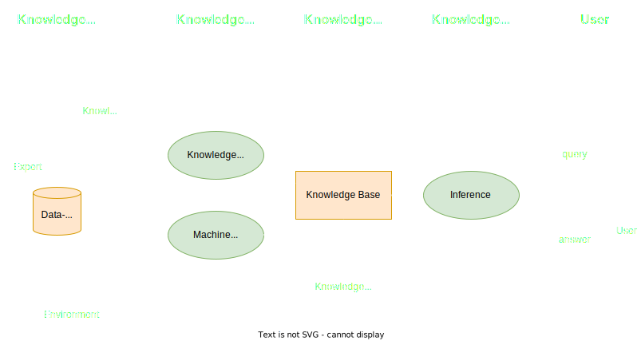
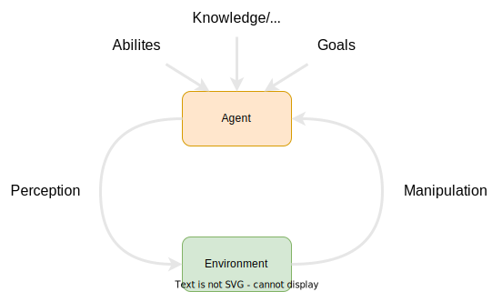
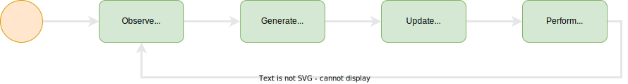
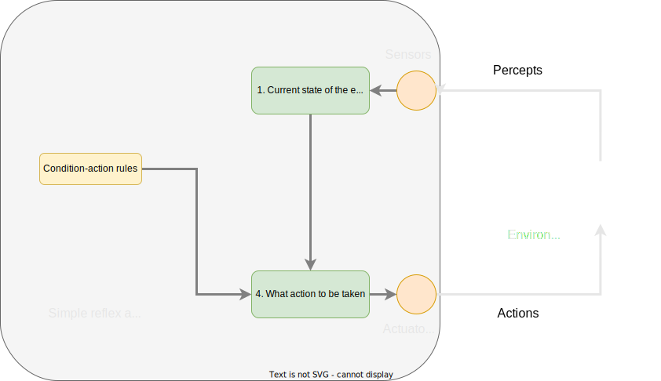
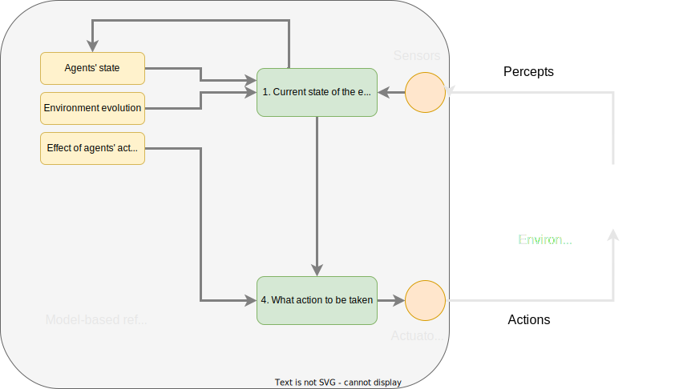
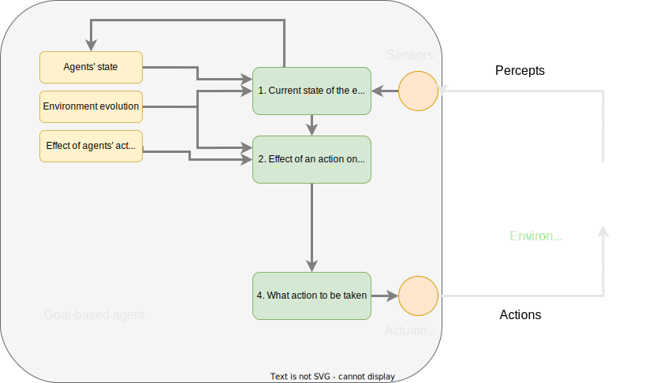
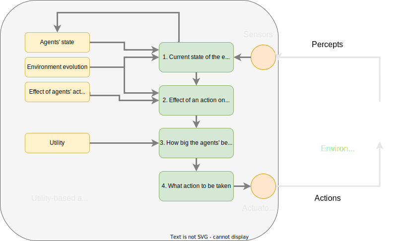
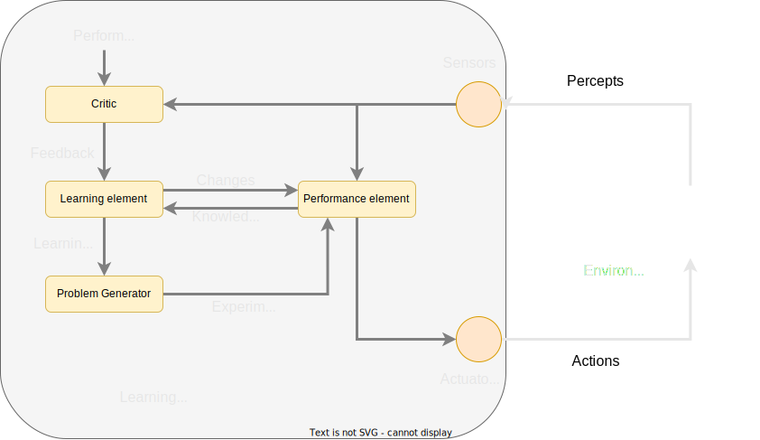

Knowledge-based systems / Agent-based systems
Lecture: Introduction to Artificial Intelligence
Part 5
Learning objectives
In this section you will learn...
- The general structure of knowledge-based systems (KBS)
- How knowledge is represented and stored in KBS
- How knowledge inference works
Group work
Knowledge-based / Agent-based systems
Reading "Introduction to knowledge-based systems"
Literature
- ETD2000 - Introduction to Knowledge-based systems
- Graham - Introduction to Knowledge-based systems
- Ahmed - Knowledge-based Systems Survey
- SmartSheet article to knowledge-based systems>
Reading "Introduction to Mulit-Agent systems"
Literature
- Balaji - Introduction to Multi-agent Systems
Reading "Introduction to knowledge-based systems"
Questions
- What are the elements of knowledge-based systems (KBS)
- Name typical applications of KBS
- Relations of KBS to Artificial Intelligence
- Properties of Multi-agent systems (MAS)
- How are MAS, AI and KBS related
Group work
Groups
- Properties, elements and applications of KBS
- Properties, elements and applications of MAS
- Relations of KBS, MAS and AI
Collaborative Session (i-learn) 30 Minutes
Knowledge-based systems
Structure of a knowledge-based system
Knowledge acquisition
How to get the knowledge into the system?
- Interviewing domain experts
- Domain-specific methods developed
- Tableaus
- Structured documents
- System-theoretic analysis approaches
Knowledge engineer
Knowledge acquisition
- Natural language processing: Classification of huge document bases
- Ontology creating/processing: Semantic Web technologies
- Automated reasoning: Supporting experts (minimising efforts for experts)
- Basically: supports experts
Machine learning
Knowledge representation
"Knowledge representation is representing information in symbolic language from the real world for a computer to understand and utilize this knowledge to solve complex problems"
Means of knowledge representation
knowledge representation needs formal methods. Typical examples are:
- Classical/Propositional logic
- First-order logic
- Fuzzy logic
- Probabilistic logic
- Decision trees
- Semantic technologies / ontologies
Knowledge representation - decision tree

Knowledge representation - large decision tree
Agent-based systems
Agent-based systems: central idea
“Systems decide for themselves what they need to do in order to satisfy their objectives”
Agent-based systems...
What is an agent?
"An agent is a computer system that is situated in some environment, and that is capable of autonomous action in this environment to meet its design objectives."
Different types of agents
- A software agent has keystrokes, file contents, received network packages, which act as sensors and displays on the screen, files, sent network packets acting as actuators.
- A human agent has eyes, ears, and other organs which act as sensors, and hands, legs, mouth, and other body parts acting as actuators.
- A robotic agent has cameras and infrared range finders, which act as sensors, and various motors acting as actuators.
Different types of environments
- Observable vs. partially observable
- Agent can obtain the environment completely or not
- Deterministic vs. non-deterministic
- Each action has a single guaranteed effect or not
- Discrete vs. Continuous
- The environment changes in discrete steps or not
Intelligent agents
- ...directly reactive
- Basically on a single input signal
- ...preceptive
- The input signals are related to an internal perception
- ...state-based
- Agent maintains an internal state
Agents might act...
Operation of state-based agents
Properties of intelligent agents
- Autonome
- Cognitive
- Communicative
- Proactive
- Reactive
- Robust
- Social
Architectures of intelligent agents
Simple reflex agent
Model-based reflex agent
Goal-based agent
Utility-based agent
Learning agent
Knowledge-based systems and agent-based systems
- An intelligent agent needs knowledge about the real world for taking decisions and reasoning to act efficiently.
- Knowledge-based agents are those agents who have the capability of maintaining an internal state of knowledge, reason over that knowledge, update their knowledge after observations and take actions. These agents can represent the world with some formal representation and act intelligently.